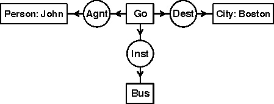
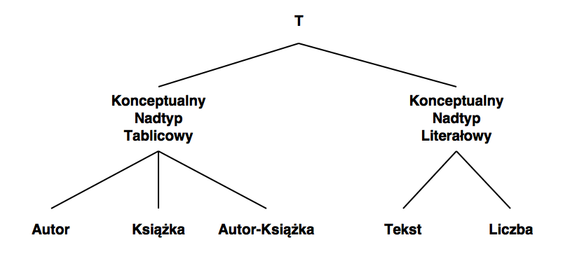
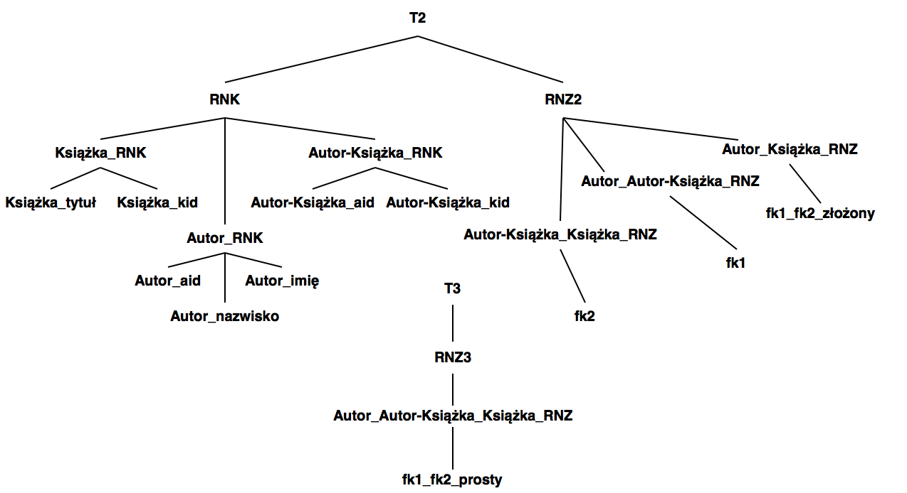
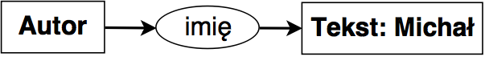
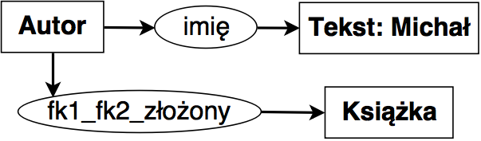
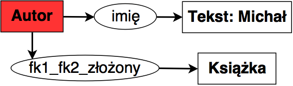
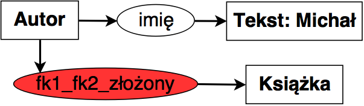
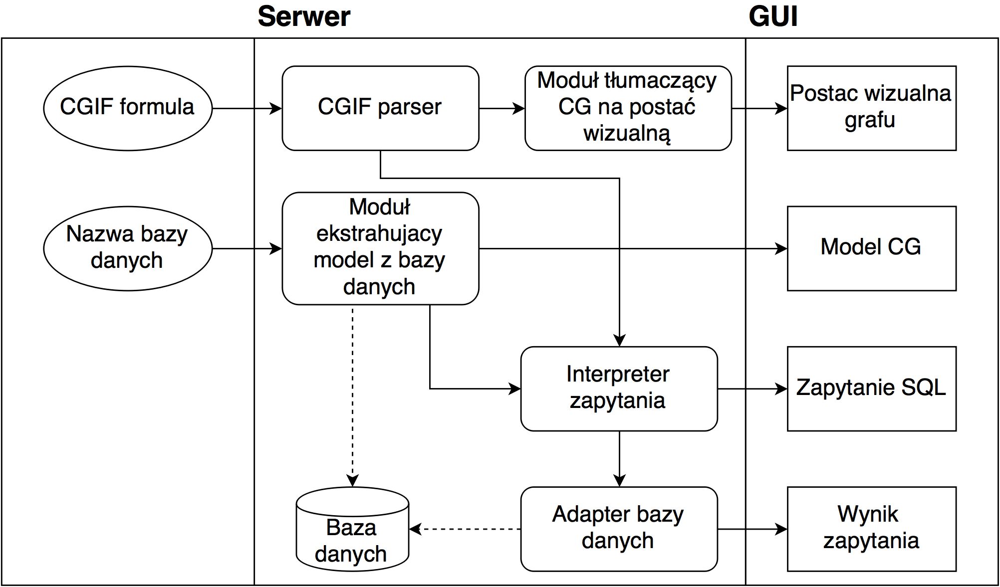
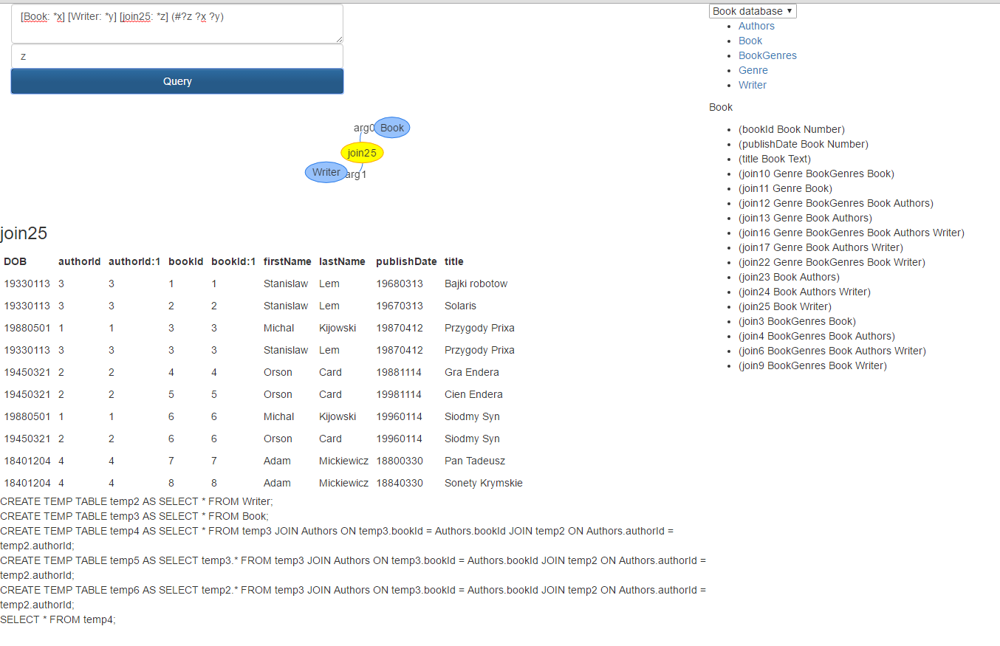
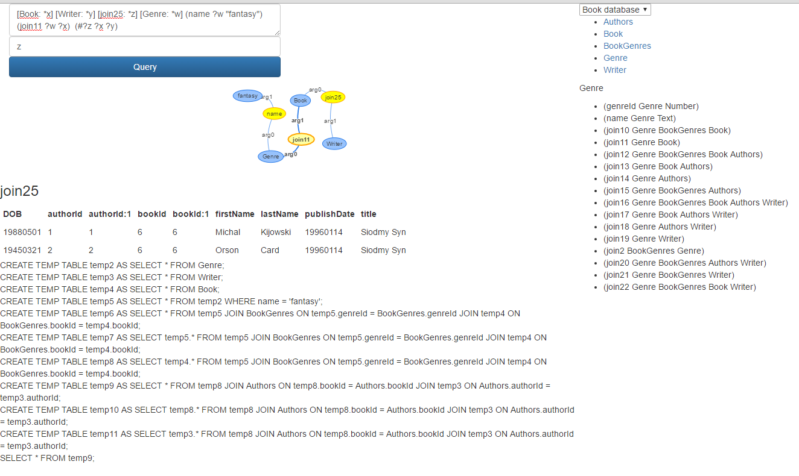

Modelowanie wiedzy zawartej w relacyjnej bazie danych przy pomocy grafów konceptualnych
Zadawanie zapytań do relacyjnej bazy danych przy użyciu tak powstałego modelu konceptualnego

Klasyczny przykład grafu konceptualnego reprezentujący wiedzę zawartą w zdaniu John is going to Boston by bus.
Formatem najczęsciej używanym do komunikacji pomiędzy programami wykorzystującymi grafy konceptualne jest format o nazwie Conceptual Graph Interchange Format.
1: 2: 3: 4: 5: 6: 7: 8: |
|
W celu precyzyjnej definicji składni oraz semantyki grafów konceptualnych wprowadza się pojęcie Modelu grafu konceptualnego.
Pozwala on opisać syntaktyczne ograniczenia występujące pomiędzy pojęciami oraz dostarcza informacji na temat dziedziny, którą opisuje rozpatrywany graf.
Modelem nazywamy krotkę postaci \(M = ((T_C, \le_C), (T_R, \le_R), I)\) gdzie:
Teoretyczną podstawą modelu relacyjnego jest matematyczna teoria mnogości.
Podstawowym pojęciem w modelu relacyjnym jest pojęcie relacji, za pomocą którego opisujemy zbiór rekordów (obiektów) o identycznej strukturze wewnętrznej. Obiekty te często przedstawia się w postaci tablicy.
Ustalony zbiór relacji nazywamy schematem bazy danych.
W modelu relacyjnym każda z relacji (prezentowana w postaci np. tabeli) jest reprezentowana za pomocą trzech parametrów:
Kolejnym ważnym elementem modelu relacyjnego jest zbiór operacji służących do manipulacji oraz przeszukiwania danych. Najczęściej zbiór tych operacji opisuje się przy pomocy algebry relacyjnej.
Zarówno model relacyjny jak i grafy konceptualne:
Konceptualny Typ Tablicowy
Konceptualny Nadtyp Tablicowy
Konceptualny Typ Liczbowy
Konceptualny Typ Napisowy
Konceptualny Nadtyp Literałowy

Relacyjny Typ Kolumnowy
Relacyjny Nadtyp Kolumnowo-Tablicowy
Relacyjny Nadtyp Kolumnowy
Relacyjny Prosty Typ Złączeniowy
Relacyjny Złożony Typ Złączeniowy

Niech \(r\) będzie bazą danych o schemacie \(\mathbb{R}=(R_1,\ldots,R_n)\) gdzie \(R_i\) jest schematem \(i\)-tej relacji. Wówczas algorytm tłumaczący schemat \(\mathbb{R}\) na model grafu konceptualnego składa się z następujących kroków:
Dla każdej relacji \(r_i\in r\) o schemacie \(R_i(A_1,\ldots,A_k)\):
Tworzony jest graf \(G=(V,E)\) gdzie \(V\) jest zbiorem wierzchołków odpowiadających Konceptualnym Typom Tablicowym należącym do \(C\), natomiast \(E\) jest zbiorem krawędzi odpowiadających Relacyjnym Prostym Typom Złączeniowym należącym do \(R\).
Dla każdej pary wierzchołków \(v_i,v_j\in V\):
Zwracany jest model grafu konceptualnego postaci \(M=((C,\leq_C),(R,\leq_R),I)\)
Przed przystąpieniem do definicji Konceptualnego Grafu Zapytania należy zrozumieć, dlaczego normalny graf konceptualny nie jest wystarczający w przypadku zadawania zapytania.


Konceptualnym Grafem Zapytania nazywamy krotkę postaci \((G,Q)\), gdzie \(G\) jest grafem konceptualnym, natomiast \(Q\) jest zbiorem złożonym z wyróżnionych wierzchołków konceptualnych oraz relacyjnych należących do \(G\).

Imię |
Nazwisko |
|---|---|
Michał |
Kijowski |
Michał |
Kwiatkowski |

Imię |
Nazwisko |
Tytuł |
ISBN |
|---|---|---|---|
Michał |
Kijowski |
Pierwsza książka |
1234 |
Michał |
Kijowski |
Druga książka |
5678 |
Michał |
Kwiatkowski |
Pierwsza książka |
1234 |
Główna idea algorytmu opiera się na rekurencyjnym zawężaniu zbiorów obiektów zgodnych z danym Konceptualnym Grafem Zapytania.
Mamy dany model konceptualny \(M=((T_C, \leq_{C}),(T_R, \leq_{R}),I)\) oraz oparty na tym modelu Konceptualny Graf Zapytania \((G,Q)\), gdzie \(G=(C,R,E,lab,coref)\) oraz \(Q=(q_1,\ldots,q_n)\). Wówczas opisywany algorytm wykonuje następujące kroki:
Dla każdego wierzchołka konceptualnego \(c\in C\) o Konceptualnym Typie Tablicowym \(T_c\):
Dla każdego wierzchołka relacyjnego \(r \in R\) o Relacyjnym Typie Kolumnowym:
Dla każdego wierzchołka relacyjnego \(r\in R\) posiadającego Relacyjny Typ Złączeniowy:
Dla każdego wierzchołka \(c\in Q\) inicjalizowany jest zbiór \(W_c\) zgodnie z definicją.
Zwracany jest zbiór Zbiorów Wyników \(W=\{W_i | i\in Q\}\)



Dziękuję za uwagę!